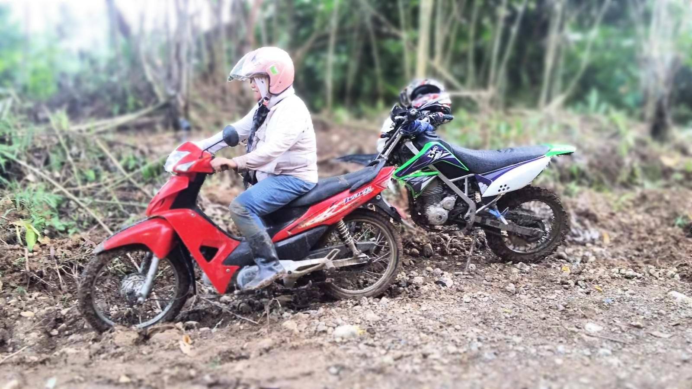
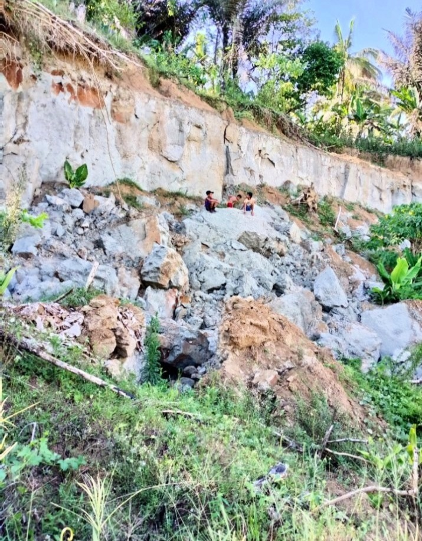
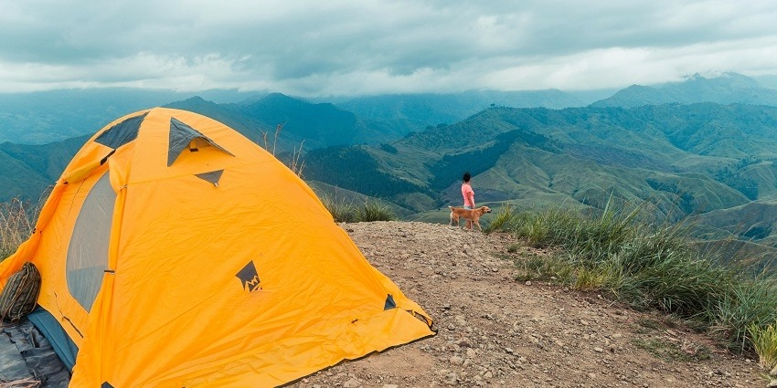

About Me
Join me on a journey of discovery! I'm Beth Cooper, and I'm passionate about exploring the world, embracing new experiences, and sharing the beauty of adventure and lifestyle. From hiking through breathtaking landscapes to capturing the essence of everyday moments, I'm here to inspire you to live a life filled with wonder.

My Gallery
A glimpse into my adventures.
-
 Exploring Sitio Kapatagan, Brgy. Gupitan, Kapalong, Davao Del Norte by bike -
 Witnessing a landslide on our countryside land -
 Country Side Camping View
Core Themes
These are the threads that weave through my adventures and photography:
- Farming: Cultivating life and connecting with the earth.
- Camping: Embracing simplicity and nights under the stars.
- Photography: Capturing the fleeting beauty of the natural world.
- Nature Exploration: Discovering the wonders of the wild, big and small.
- Our Countryside Land: Documenting the seasons and stories from our special place.
Connect With Me
Follow my adventures and connect with me on social media!
Join the Adventure!
Subscribe to my newsletter for exclusive content, travel tips, and more!